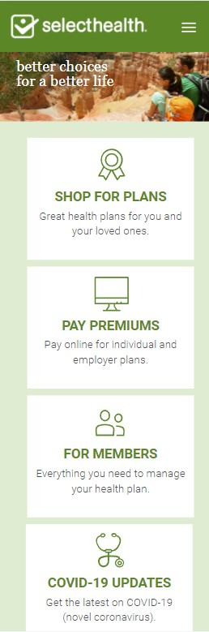
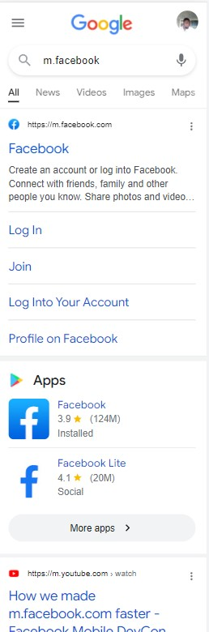

Alignment
Google Inc
youtube.comAlignment is all about the positioning of your elements, including text and imagery, as well as buttons, and content boxes. To align something in web design means to position the elements within a straight line, or in the correct positioning. The boxes on this website are aligned on the same straight line. The way the boxes are placed develops order and order conveys harmony.
Proximity
Intermountain Healthcare
selecthealth.com Proximity refers to the closeness of elements in a page. Different elements in webpages can be grouped together to create a bigger association. The principle of proximity calls for related items to be grouped visually, creating less clutter and making for a more organized layout. Items unrelated to each other should be placed further apart, to emphasize their lack of relationship. The Image shows content grouped by their relationship.
Repetition
Alphabet Inc
google.com Repetition is achieved by repeating an element more than once throughout a design. In web design, repetition helps users understand how interactive elements work. Repeating consistent elements within a website gives the visitor a road map, and a way to navigate confidently around your site. This website uses lines repeatedly to differentiate the sections of facebook.